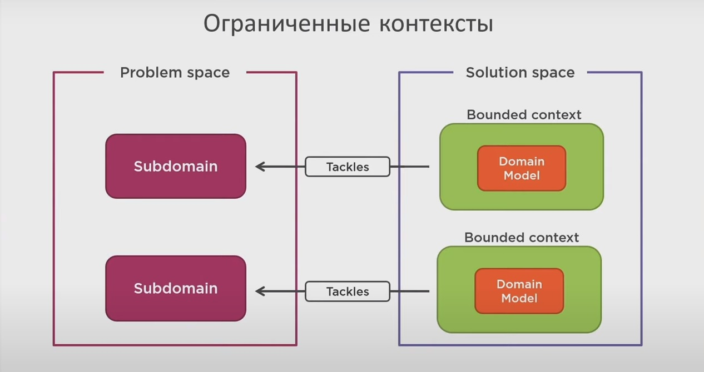

Bounded contexts Разграничение контекста - разделение домена на поддомены. Решение определённой подЗадачи. Содержит свою не пересекающуюся с другими Domain Model

Ubiquitous language (юбиквитас) Единый язык для бизнеса и програмиста. DSL Domain Specific Language - Единый язык доведённый до абсолюта, его можно скомпилировать
Domain model
Anemic (Анемичная): Содержит данные, не содержит логики. Логика в сервисе
Rich (Богатая): Содержит и данные и
логику бизнес правил. Не только
состояние, но и
поведение. Контролирует
консистентность данных, что-бы все инварианты (условия) были соблюдены
Entity (сущность) Фундаментальный элемент при построении контекста. Имеет жизненный цикл.
Value Object (immutable!): Строительные блоки доменной модели. Позволяют сделать строгую типизацию. Логику надо спускать в них
Aggregate